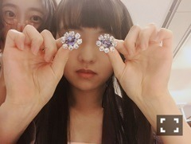
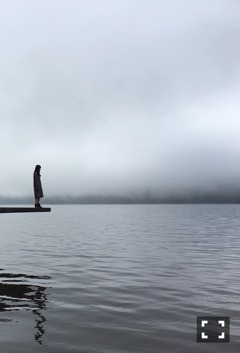

| 2016/11 21 Mon | 旅路。750回目 |

ベストヒット歌謡祭
ありがとうございました！
星空になる〜のところ、
全員の指差す後ろ姿と、
星空のような一面ペンライトという、、
ぴったりなカメラワークに感動した！
うたコン、とても華やかだった！
三味線ブギウギ、可愛らしい曲で
お着物で踊れたのは貴重でした。
Rの法則は久々のお絵描き楽しかった。
でも人物画苦手だ〜〜
そして、私にとっての初回放送だった
NOGIBINGO!7の腹話術人形は、
縄跳びで筋肉痛がしばらく続きました。
縄跳びって、、
もはや人形遊びでもなんでもない(^｡^)、、！
blt graph. vol.13
箱根、芦ノ湖。
マイナスイオン〜
霧が濃い中の撮影は幻想的でした。
テーマが、今の私にしっくり〜
ロングインタビューも読んでね！


年末に向けてなのか、インタビューが多い！
その中の3本がさゆとだったの面白い〜
全部内容違うと思うからお楽しみに。

今、どんな道の上にいるのか
という質問は新鮮だったけど、
話しながら納得した感じ。
まりか
コメント(540)
2016/11/21 20:30